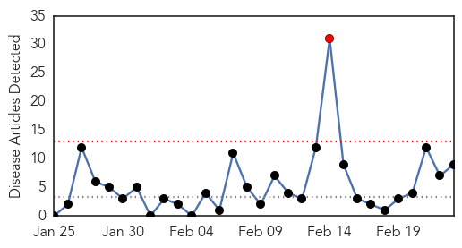
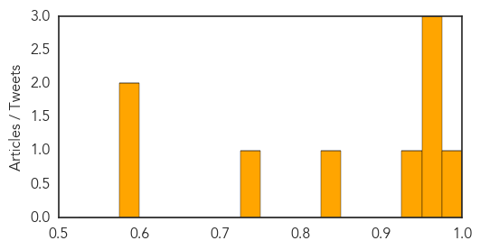
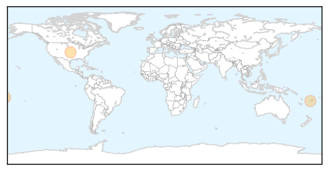

Measles
30-Day Web Trend
1 alerts, 0 warnings

30-Day Twitter Trend
0 alerts, 0 warnings

Article Locations

Article Confidences
Top Articles:
- 0.982
- Concerns over increase in measles cases in California
- 0.971
- California reports surge in measles, some cases linked to travel to Philippines, India
- 0.959
- 15 cases of measles in California since Jan 1
- 0.956
- Flu deaths increase to 278 across California
- 0.942
- Deputy PM urges concerted fight against measles, bird flu
- 0.845
- As California’s Flu Season Fades, New Threat Emerges: Measles
- 0.741
- California Reports 15 Cases Of Measles In 2014, Compared To Two Last Year
- 0.589
- Even affluent families skipping vaccination
- 0.576
- Even affluent families skipping vaccination
Top Tweets:
-
No tweets found for Feb 23, 2014
Dengue Fever
30-Day Web Trend
3 alerts, 6 warnings

30-Day Twitter Trend
1 alerts, 0 warnings

Article Locations
Article Confidences

Top Articles:
Top Tweets:
-
No tweets found for Feb 23, 2014